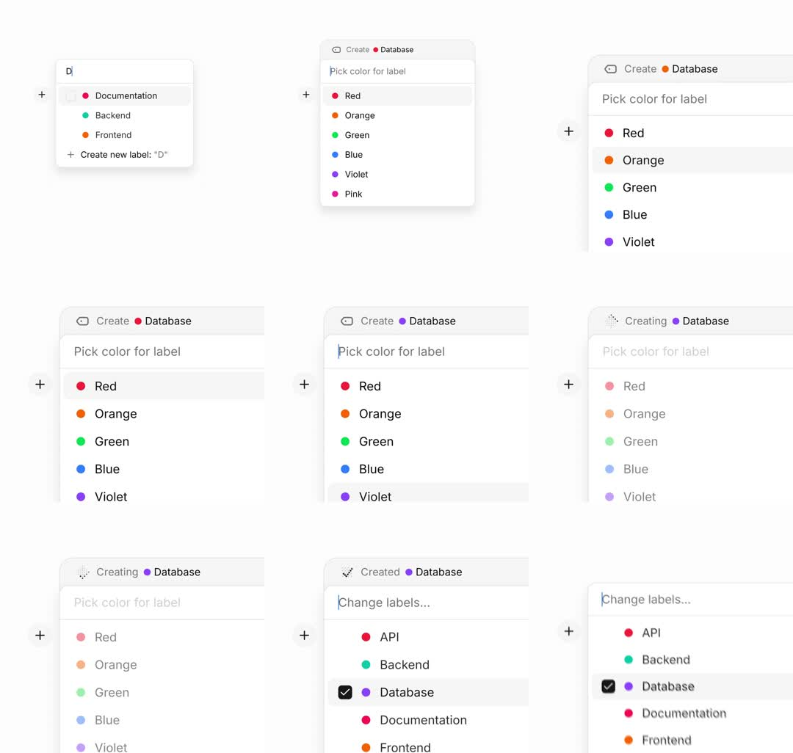

Morphing braille loader inside an async create flow: a label-picker menu where choosing a color for a new label flips the header chip from 'Create' to 'Creating' - the leading icon becomes a 2x3 braille-dot matrix whose dots cycle through braille patterns like a spinner - then 'Created' with a check; the menu's list crossfades from color choices to the updated label list with the new item checked.
Media
Frame-by-frame

0-15%
Type-ahead: 'D' filters labels (Documentation/Backend/Frontend) with 'Create new label: "D"' row at bottom.
15-35%
Color picker step: header 'Create <dot> Database', 'Pick color for label' caption, 6 color rows (Red, Orange, Green, Blue, Violet, Pink); rows hover-highlight.
35-55%
Color chosen: header icon morphs into a braille dot-matrix loader - 6 dots (2 cols x 3 rows) cycling patterns; title 'Creating'; list dims to 40%.
55-75%
Loader resolves to a check: header 'Created <violet dot> Database'; list crossfades back in now titled 'Change labels...' with Database checked.
75-100%
Settled state: label list (API, Backend, Database checked, Documentation, Frontend).
Build prompt
Rebuild this flow 1:1: a label create flow with a morphing braille loader - three states inside one menu: type-ahead list, color picker, and the async "Creating" state whose header icon becomes a 2x3 braille-dot matrix, resolving to "Created".
## Integration
Integration: stack-agnostic spec - every value is plain layout/typography/CSS; any motion is described as duration + curve that maps to any animation library.
## Screen 1 - Type-ahead
Menu: "D" filters labels (Documentation / Backend / Frontend); bottom row: 'Create new label: "D"'.
## Screen 2 - Color picker
Header "Create <dot> Database", caption "Pick color for label", 6 color rows (Red, Orange, Green, Blue, Violet, Pink) with hover highlight.
## Screen 3 - Creating / Created
Color chosen: header icon morphs into a braille dot-matrix loader (2 cols x 3 rows, 6 dots cycling through braille patterns, ~100ms per pattern, strictly linear); header text swaps to "Creating"; list dims to 40% (disabled, not gone). ~1s later: matrix morphs to a check (dots fade, check draws 200ms); header reads "Created <violet dot> Database"; list crossfades back (200ms), now titled "Change labels..." with Database checked.
## Transitions
- List -> color picker: content swap 150ms within the same menu.
- Icon -> braille matrix: dot grid fades in 150ms; header text swaps 150ms.
- Resolve: check draws 200ms; list crossfade 200ms.
## Calibration
- Braille stepping ~100ms per pattern, strictly linear - easing on a spinner reads as stutter.
- The pending beat is ~1s: long enough to register the loader, short enough to feel instant.
## Reduced motion
Loader shows a static 3-dot pulse (opacity only, 400ms); transitions as 150ms fades.
## Don't miss
- The loader lives in the header chip's icon slot - it morphs in place, not a separate overlay.
- The created label's color dot appears in the header ("Created <violet dot> Database").
- The final list shows the new item already checked - the flow ends in context, not on a success screen.
Mechanics
trigger
color selection (async create)
elements
menu header chip, braille dot loader (2x3 grid), list container, row hover states
properties
icon morph (glyph -> braille matrix -> check), dot on/off pattern per frame, list opacity + content swap, header text swap
timing
braille cycle ~100ms per pattern; creating ~1s; crossfades 200ms